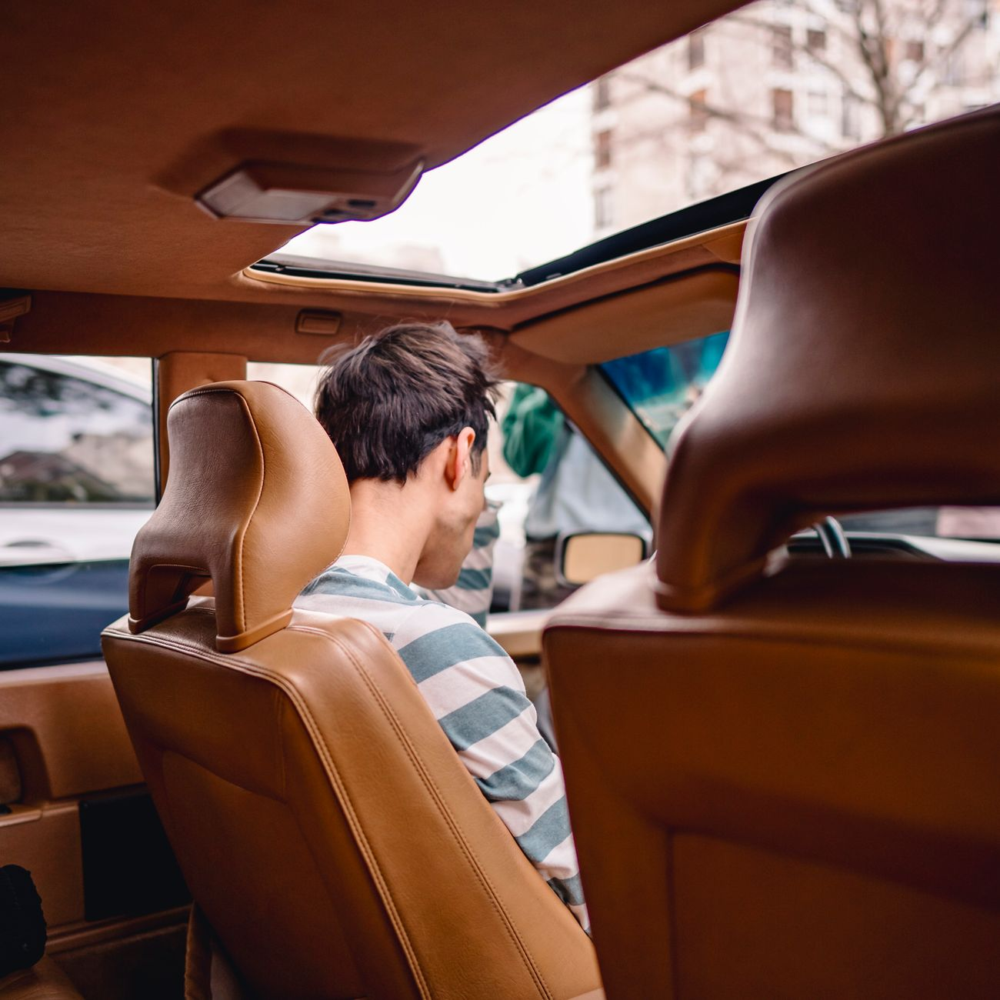
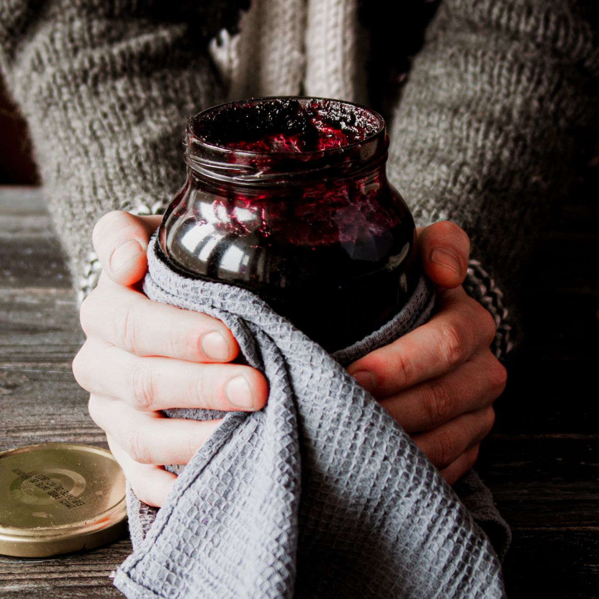

Someone nearby can help. Someone nearby needs you.
Neighbourly Hands puts small, practical requests from people around Bristol in front of checked neighbours who live a few streets away. A lift. A shop run. Half an hour of company. No cost, no catch.
The kinds of help people ask for
Most requests take under an hour. If you are wondering whether yours is too small to bother anyone with — it isn't. Small is what we do.
-
Shopping runs
A weekly trolley from the big shop, or a bag of milk, bread and cat food when the weather turns. You pay for the shopping, nothing else.
-
Lifts to appointments

Southmead, the BRI, the dentist on Gloucester Road. A driver who waits, and brings you home again.
-
Dog walking
For the fortnight after an operation, or every Tuesday while you're at dialysis. The dog gets out, you stop worrying.
-
Small repairs
A dripping tap, a curtain rail, a smoke alarm beeping six feet above your head. Nothing that needs a certificate — we'll tell you honestly if it does.
-
Paperwork

Blue badge renewals, council letters, an online form that wants a password you've never had. Sat down with, not done at you.
-
A half-hour of company
A cup of tea and the local news. It is one of the most requested things on the board, and one of the easiest to give.
How a request actually travels
-
1. You tell us what you need
By form or by phone, in your own words. A coordinator rings you back within one working day to check the details and the timing.
-
2. We ask the nearest helpers
Your request goes to approved helpers in your postcode area only. They see your first name, the task and the street — not your full address until someone has said yes.
-
3. You both get the same message
Name, time, what's agreed. We check in afterwards to see how it went. If it didn't suit, we find someone else and say nothing more about it.
Two short stories
I put off asking for about four months. My knee meant I couldn't get down to the shops and I kept thinking somebody else needed it more. Then Marie turned up with my shopping and stayed for a cup of tea, and the whole thing took forty minutes out of her Saturday. I ask now without the fuss.
Delia, Horfield
I work shifts, so I thought I'd be no use. I do one lift a fortnight — usually a Tuesday morning run to Southmead. It's forty minutes of driving and a proper conversation, and I know three people on my road now who I only used to nod at.
Owen, Bishopston
What we check before a helper is approved
Everyone who helps through Neighbourly Hands goes through the same checks, whether they're giving one lift a year or walking a dog every week.
- Photo ID
- Seen in person at one of our sign-up sessions, and matched to the address given.
- Two references
- Taken up and spoken to by a coordinator. Not relatives.
- Enhanced DBS
- Required for anything involving children or personal care. We pay for it; the helper never does.
- A conversation
- Half an hour with a coordinator about what you're comfortable doing, and what you're not.
Helpers never ask you for money, never handle your bank cards, and never need keys. If anyone does, tell us and we'll deal with it that day.
Rather talk to a person?
Ring 0117 496 0188, Monday to Friday, 9am to 5pm. A coordinator picks up — there is no menu to get through. You can also email hello@neighbourlyhands.org.